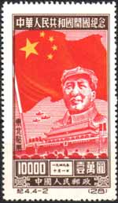
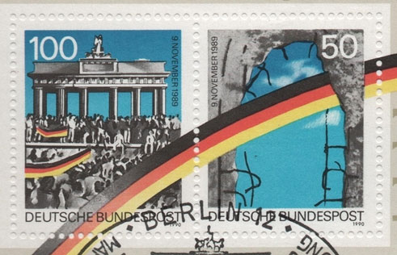

The World of Communism
in Stamps
Explore how stamps reflected, promoted and recorded the ideals, leaders and events of the communist era around the world.
Explore the Collection →Lenin, Lenin, LeninSalvador Dalí: Hallucination. Six Images of Lenin on a Grand Piano

Mao’s HeritageMao Zedong and his legacy

Cambodia GenocideCambodia and the Khmer Rouge

Border TroopsFrontier guards on stamps

The Berlin WallThe divided Germany